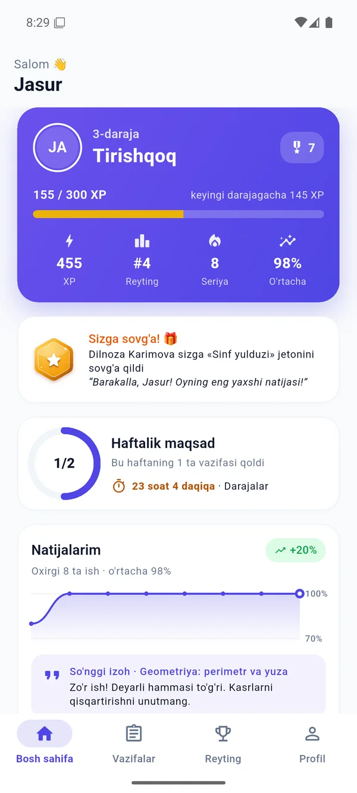
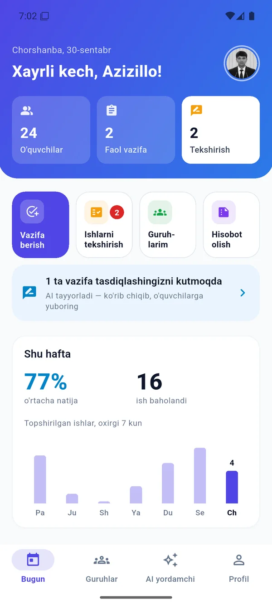
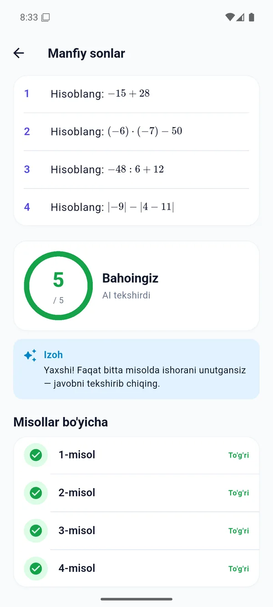

AI tekshiruv
Daftar rasmidagi har bir misol alohida baholanadi. Xato bo‘lsa, AI uni oddiy tilda tushuntiradi.
Mentor AI — o‘qituvchi uchun uy vazifasini tekshiradigan, guruhni tahlil qiladigan va yangi topshiriq tuzadigan aqlli yordamchi. O‘quvchi esa har bir misol bo‘yicha izoh, ball va reytingni darhol ko‘radi.



Muammo
30 ta daftarni tekshirish kechqurun bir necha soat oladi. Xato sababi esa ko‘pincha yozilmay qoladi. Mentor AI bu ishni o‘z zimmasiga oladi, qaror esa doim o‘qituvchida qoladi.
Qanday ishlaydi
Kitob sahifasi, rasm yoki matn yuklang. Yoki mavzuni yozing, AI misollarni o‘zi tuzadi. Javoblarni ham AI oldindan tayyorlaydi, siz ko‘rib tasdiqlaysiz.
O‘quvchi daftarini telefonda suratga olib yuboradi. Bir nechta rasm yoki PDF ham bo‘ladi. Muddat va eslatmalar avtomatik.
Har bir misolni to‘g‘ri javob bilan solishtiradi, ball qo‘yadi va xatoni tushuntiradi. Qo‘lyozma, formulalar va ingliz tili ham tushuniladi.
Bahoni bir tugma bilan tasdiqlaysiz yoki o‘zgartirasiz. O‘quvchi natija, izoh va XP ballni darhol oladi, reyting yangilanadi.
Imkoniyatlar
Daftar rasmidagi har bir misol alohida baholanadi. Xato bo‘lsa, AI uni oddiy tilda tushuntiradi.
Mavzu, soni va qiyinligini tanlang. Formulalar LaTeX bilan chiroyli chiqadi.
“Qaysi mavzu qiynayapti?” deb so‘rang. Javob faqat guruhingizning haqiqiy ma’lumotlariga asoslanadi.
8 haftalik trend, o‘rtacha natija, eng qiyin mavzu, eng ko‘p xato va e’tibor kerak bo‘lgan o‘quvchilar.
Guruh bo‘yicha oylik yoki umumiy hisobot. Ma’muriyatga yuborish uchun tayyor.
XP, darajalar, kunlik seriya, guruh reytingi va 15 ta nishon. Bolalarcha emas, jiddiy ko‘rinishda.
O‘qituvchi yaxshi o‘qigan o‘quvchiga shaxsiy tabrik bilan jeton sovg‘a qiladi.
O‘qituvchi uchun
Quyidagi ekranlar ilovadan olingan haqiqiy skrinshotlar.
O‘quvchilar, faol vazifalar va tekshirish kerak bo‘lgan ishlar. Tezkor amallar: vazifa berish, ishlarni tekshirish, guruhlar, hisobot. Haftalik natija grafigi.
Har bir guruh kartasida o‘rtacha foiz, 8 haftalik trend, eng qiyin vazifa, eng ko‘p xato qilingan misol va 60% dan past o‘quvchilar soni. Pastda baholar taqsimoti.
Manbani tanlang: kitob, rasm, matn yoki AI. AI rejimida mavzu, misollar soni (5–40) va qiyinlik darajasi kifoya. Kechikish jarimasi ham shu yerda sozlanadi.
AI ishonchi past bo‘lgan yoki rasmi xira ishlar alohida ajratiladi. AI sababini ham yozadi, masalan: “3-misolni qo‘lda tekshiring”.
AI xulosasi, har bir misol natijasi va o‘quvchiga yozilgan izoh. Yakuniy bahoni bir tugma bilan tasdiqlaysiz yoki o‘zgartirasiz.
Guruh haqida oddiy tilda so‘rang. Yordamchi faqat haqiqiy baholarga tayanadi, formulalarni to‘g‘ri yozadi va kerak bo‘lsa vazifa qoralamasini tayyorlaydi.
AI vazifa generatori
O‘qituvchi nima kerakligini yozadi. AI misollarni tuzadi, har biriga javob tayyorlaydi va formulalarni LaTeX bilan chiroyli ko‘rsatadi. Yuborishdan oldin o‘qituvchi hammasini ko‘rib chiqadi.
O‘quvchi uchun
O‘quvchi xatosini tushunadi, o‘sishini ko‘radi va harakati uchun e’tirof oladi.
Daraja, XP, guruhdagi o‘rin, seriya va o‘rtacha natija. Haftalik maqsad halqasi va eng yaqin muddatgacha qolgan vaqt.
Topshirish kerak bo‘lganlar va baholanganlar alohida. Muddati yaqinlashsa yoki o‘tib ketsa, rang bilan emas, aniq yozuv bilan ko‘rsatiladi.
Misollar LaTeX formulalari bilan, baho, AI izohi va har bir misol bo‘yicha natija. O‘quvchi aynan qayerda xato qilganini ko‘radi.
Haftalik va umumiy reyting. XP muddatida topshirish, a’lo natija va seriya uchun beriladi, shuning uchun ko‘chirib yozish foyda bermaydi.
15 ta nishon: seriya, a’lo natijalar, fanlar bo‘yicha ustalik. Har birining progressi ko‘rinib turadi.
O‘qituvchi jeton sovg‘a qilsa, o‘quvchi uni tabrik so‘zlari bilan birga oladi. Jeton profilda “Ustoz sovg‘alari” bo‘limida saqlanadi.
Ustoz jetonlari
O‘qituvchi jetonlarni bizdan sotib oladi va o‘zi tanlagan o‘quvchiga shaxsiy tabrik bilan sovg‘a qiladi. Jeton o‘quvchi profilida umrbod qoladi.
O‘qituvchi ilovadan buyurtma beradi, admin tasdiqlaydi
O‘quvchi profilidan bir tugma va tabrik so‘zi bilan
Bosh sahifada xabar, profilda doimiy nishon
Narxlar
Barcha tariflarda AI tekshiruv, AI vazifa generatori, AI yordamchi, tahlil va hisobotlar to‘liq ishlaydi. Farqi faqat guruh va o‘quvchilar sonida.
O‘quvchilar uchun ilova bepul. To‘lov faqat o‘qituvchi tarifi uchun. 1, 3, 6 yoki 12 oyga olish mumkin.
Yuklab olish
Kamerani QR kodga qarating yoki tugmani bosing. Android 7.0 va undan yuqori · Versiya 1.1.0
2017-yildan keyin chiqqan deyarli barcha Android telefonlar (64-bit): Samsung, Xiaomi, Redmi, Honor, Vivo va boshqalar.
APK yuklab olishZamonaviy versiya o‘rnatilmasa, shu versiyani oling (32-bit protsessorlar uchun).
APK yuklab olishTugmani bosing yoki QR kodni skanerlang
“Noma’lum manbalardan o‘rnatish”ga brauzer uchun ruxsat bering
Faylni oching va “O‘rnatish”ni bosing
Email orqali ro‘yxatdan o‘ting — 14 kun bepul
Savollar
Yakuniy bahoni doim o‘qituvchi tasdiqlaydi. AI ishonchi past bo‘lgan ishlarni (xira rasm, noaniq yozuv) o‘zi “Tekshirish kerak” navbatiga ajratadi va sababini yozadi. O‘qituvchi istalgan bahoni o‘zgartira oladi.
Hozir eng yaxshi natija matematika (arifmetika, kasrlar, tenglamalar, geometriya) va ingliz tilida. Fizika va kimyo masalalari ham tekshiriladi. Formulalar LaTeX bilan to‘g‘ri ko‘rsatiladi.
Bir xil rasm qayta yuborilsa, tizim uni aniqlaydi. XP esa faqat muddatida topshirish va yuqori natija uchun beriladi, shuning uchun ko‘chirishdan foyda yo‘q.
Daftar rasmlari faqat o‘quvchining o‘ziga va uning o‘qituvchisiga ko‘rinadi. Havolalar imzolangan va muddatli. Kunlik zaxira nusxa olinadi.
Ha. Rasmlar yuborishdan oldin siqiladi, profil rasmlari va skrinshotlar telefonda keshlanadi. AI tekshiruv serverda fon rejimida ishlaydi, o‘quvchi kutib turishi shart emas.
Hozircha Android ilovasi tayyor. iOS versiyasi rejada.
Ilova ichida tarifni tanlab so‘rov yuborasiz. Admin siz bilan bog‘lanadi va to‘lov tasdiqlangach tarif darhol yoqiladi. Onlayn to‘lov tez orada qo‘shiladi.
Yopiq bo‘lim
Hakamlar va hamkorlar uchun. Raqamlar haqiqiy tekshiruvlarda o‘lchangan token sarfiga asoslangan.
Bir o‘qituvchidan oylik sof foyda
—
Mentor AI’ni o‘rnating, birinchi vazifani bering va natijani ertaga ko‘ring.